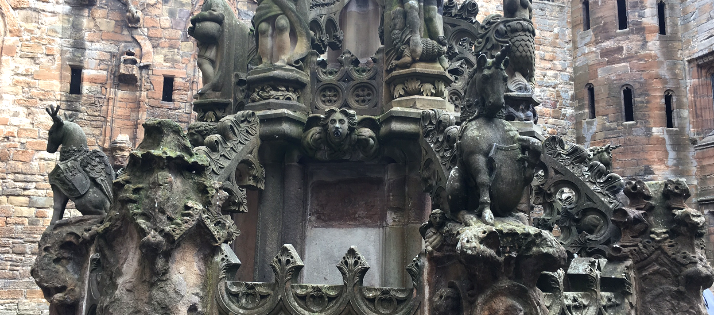

Linlithgow Palace
Linlithgow, Scotland - September 6, 2017
I got my first taste of Scottish castles yesterday! Linlithgow Palace is located right in downtown Linlithgow and was the main residence of many of Scotland's monarchs in the 1400-1600s. The palace is mostly just ruins because a great fire burned down all but the stone structure in the mid 1700s, and of course the wooden floors and ceilings did not help prevent the spread of the fire. Now, all you can see are the divets where the wooden floors would have been while you climb around the stone towers and passages of the palace.
It was really interesting to see the additions that each generation of James's made on the castle - you can see the insignia of James I and James VI on some of the courtyard windows as a sign of their restoration efforts. James VI in particular added much of the grandeur of the palace, adding the beautiful fountain in the middle of the courtyard (which features a stag with the royal crest, a unicorn as a symbol of Scotland, and a lion as a symbol of England) to wow the guests that visited Linlithgow.
What I thought was most interesting about the palace was the mention of Queen Margaret Tudor, the sister of Henry VIII and wife of King James IV of Scotland. Margaret Tudor was married off to James to try and keep the peace between England and Scotland, however when Henry, who was married to his first wife Katherine of Aragon around the same time, was off at war with France, Katherine sent troops to fight the Scots for supporting the French. James IV died during the battle of Flodden on September 9, 1513 and it was supposed that Queen Margaret waited in Linlithgow Palace at the top of the tallest tower, watching for her husband to come home. I read about the story in Philippa Gregory's book, Three Sisters, Three Queens, just before arriving in Scotland, so it was pretty special to see the actual location where one of the characters lived.
Cheers!
- Caileigh Marshall